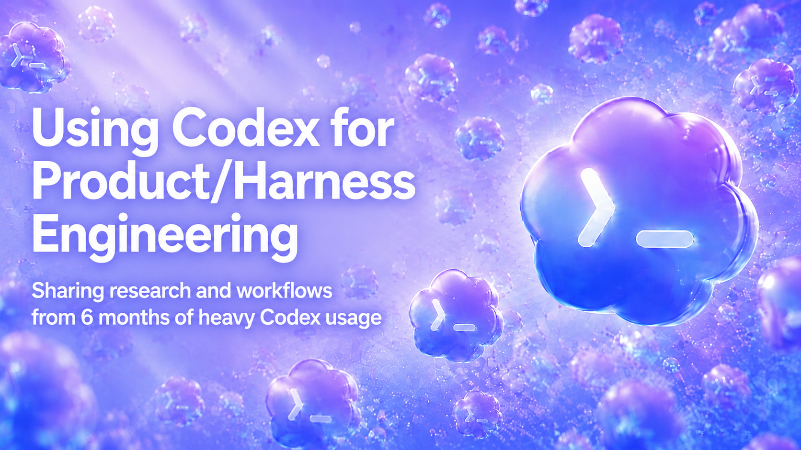
Hi, I'm Danial Hasan
I'm an applied AI engineer building products and harnesses with agents.
I'm playing with Codex to build better agentic products.
Agentic products combine two types of engineering: the product surface and the agent harness. Codex can drive both.
Codex for Product Engineering
I started by using Codex the obvious way: brain dump into it, refine that into a plan, then let it execute.
It worked surprisingly well.
Codex could move real code and get visible product changes onto the screen.
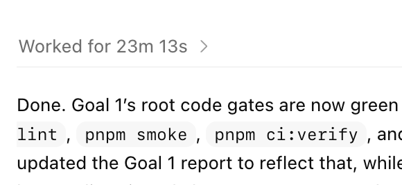
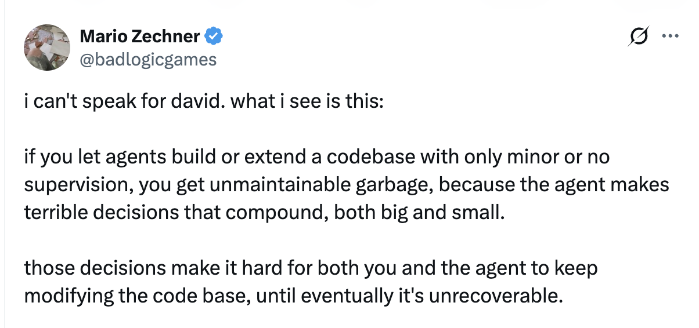
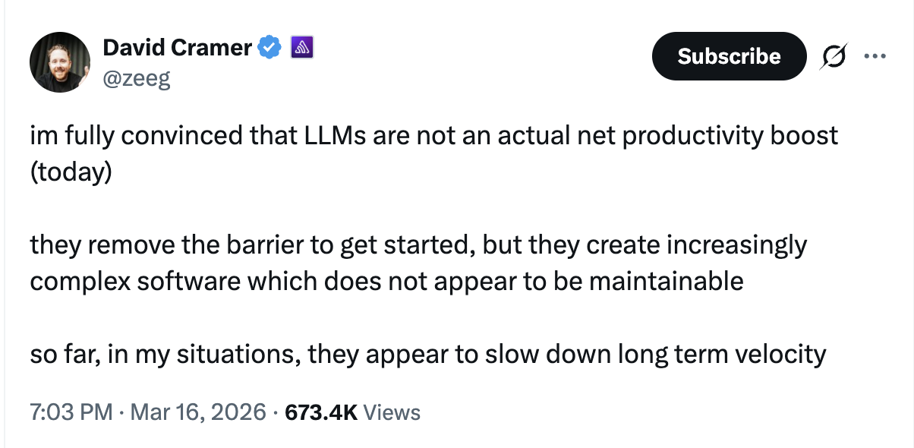
Vibe coding doesn't scale cleanly.
- It finished pieces, but missed the whole job.
- It built parts that were not wired together.
- I still had to figure out what happened.
Why do agents like Codex fail in this context?
- Code shows what changed, but not why it mattered.
- Agents can edit files without knowing the real decision.
- When proof is missing, review becomes detective work.
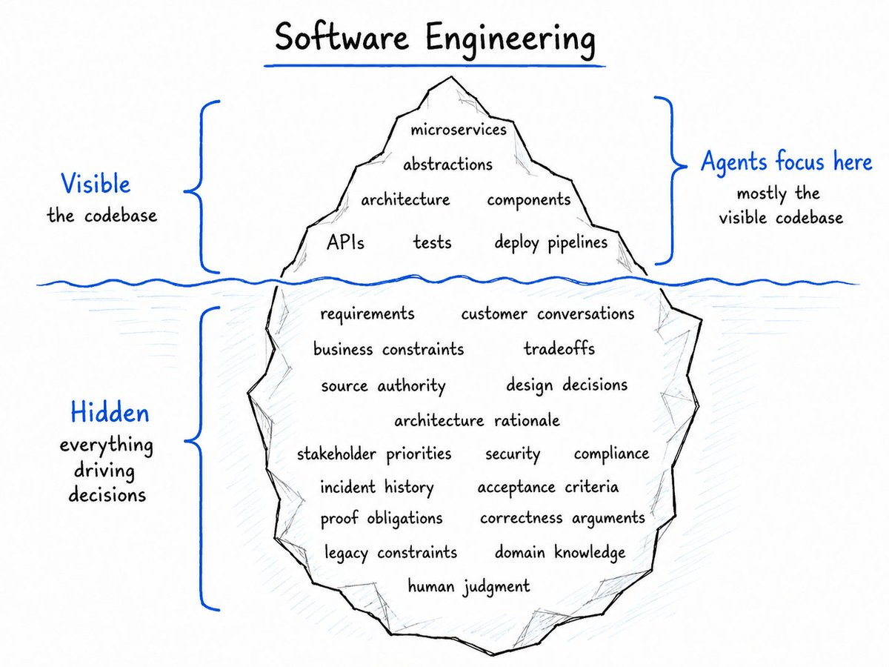
So how do we fix it?
We look for what engineers in the 90s came up with, encode those into skills, and serve them in the harness.
We turn old engineering discipline into skills Codex can run.
Plan mode is too naive when requirements are recursive.
Requirements engineering solves these problems:
- One prompt hides multiple actors, scenarios, and business contexts.
- Plans jump to implementation before asking what must be true.
- Source authority, fit criteria, and risky assumptions stay implicit.
- Proof gets substituted: screenshots for state, backend tests for journeys.
- Review becomes reconstructing intent from a plausible final diff.
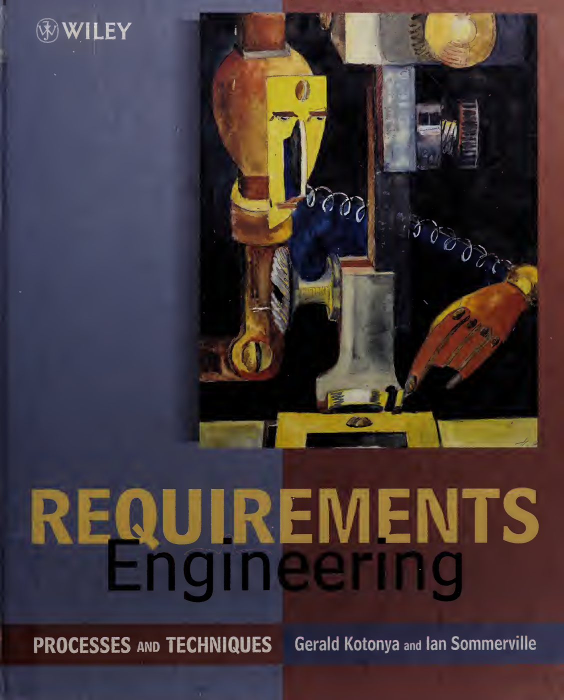
Requirements engineering makes plans better.
The extra context gives Codex something concrete to verify against.
Need traces and DB verification.
Without requirements engineering, Codex writes a plausible plan.
The plan makes sense, but it waves away too much detail, and that's how agents produce garbage.
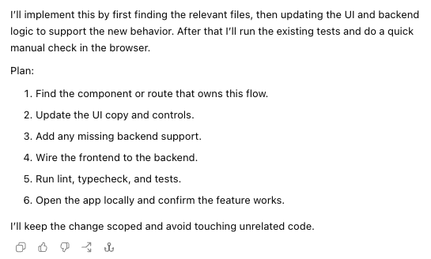
With requirements engineering, Codex writes a verifiable map.
The extra detail makes it easy to catch issues before they happen, and makes agentic work easier to verify. This means you can delegate more ambitious work with Codex.
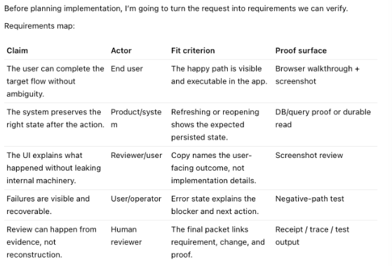
Agents must be taught how to orchestrate their workers.
Execution orchestration solves these problems:
- Agents collide when no one owns the lane.
- Tests break when another lane changes the contract.
- The human gets stuck merging everything by hand.
Execution orchestration makes delegation safe.
It turns approved work into owned, isolated, verifiable lanes.
Without execution orchestration, Codex creates busy workers.
The work splits, but ownership does not. That is how agents collide.
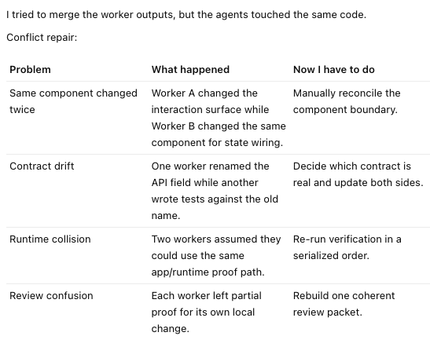
With execution orchestration, Codex delegates owned work.
Parallelism becomes reviewable because every lane has a boundary, proof target, and convergence path.
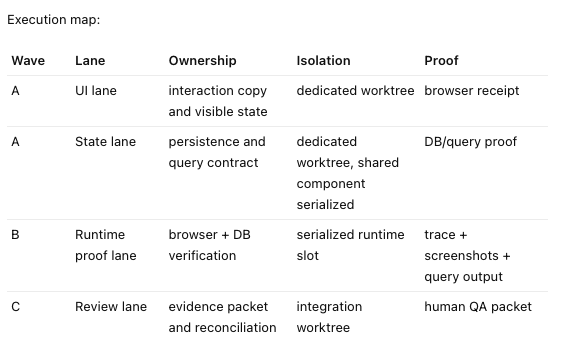
With execution orchestration, Codex delegates owned work.
Parallelism becomes reviewable because every lane has a boundary, proof target, and convergence path.
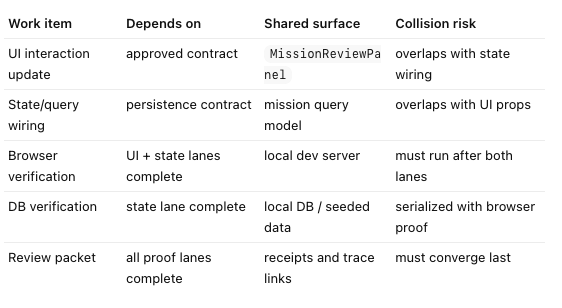
Implementation starts when `/goal` executes a signed-off Linear contract.
By this point, Codex is not discovering what to build from scratch. It is executing a contract that already contains the seam, lanes, and proof obligations.
/goal
execution entrypoint
The user points Codex at the implementation ticket, not a loose prompt.
The implementation contract embeds the orchestration and proof plan.
The ticket is structured so Codex can spend compute without expanding scope.
Implementation is an iterative dev, review, and patch loop.
The code change is only one step inside the contract-owned loop.
Layered verification lets you trade compute for robust engineering.
Every layer is considered, then run, marked not required, or held with a reason.
Pick the verification layer for the part of the app you changed.
Different parts of the app need different verification layers.
Closeout tells the human exactly what to review.
The packet links each result to the proof or blocker behind it.
- Start with a short review index.
- Show what passed, what is blocked, and what was not claimed.
- Link the exact receipts the human should inspect.
- Keep proof gaps visible beside the evidence.
These are early signs of a software factory.
Codex can move the code. The hard part is keeping the context. A factory is the workflow around the agent: requirements, proof, review, and trusted change.
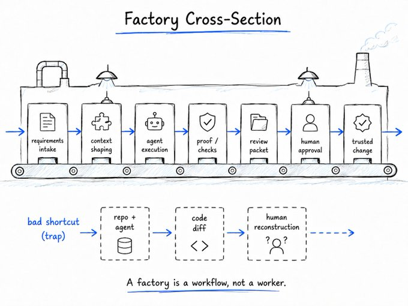
Three links to take with you.
Everything is a markdown file nowadays smh.